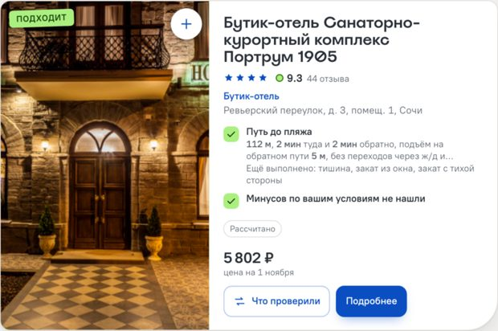
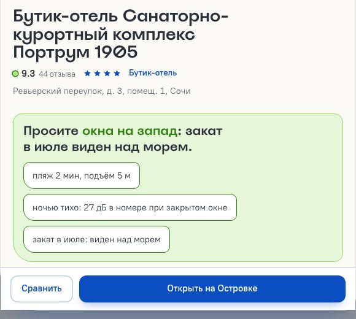
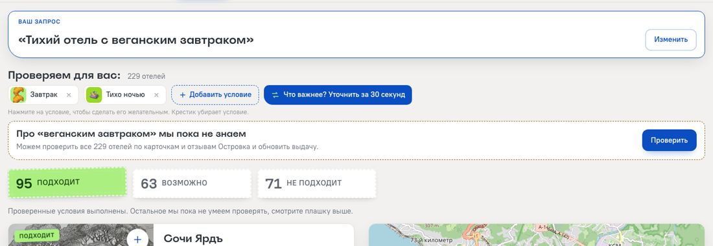
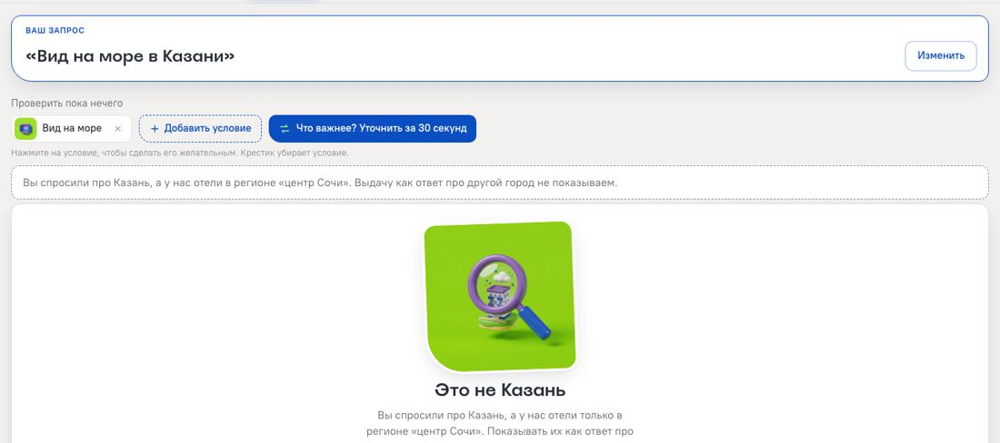

Мы проверяем детали отеля, которые важны именно для вашей поездки: видно ли море из номера, который вам дадут, сколько на самом деле идти до пляжа и где слова отеля расходятся с расчётом.
Центр Сочи, 229 отелей. Ещё два региона собраны тем же конвейером: Адлер (339) и Хоста (22).
Серенити Премиум: в карточке «50 м от пляжа».
По пешеходному графу OSM с рельефом: 242 м. Мы помечаем это как «спорно», а не «обман»: 50 м, вероятно, по прямой.
LLM делает три вещи: разбирает запрос, пишет рецепт новой характеристики и раскладывает ответ отельера. Без ключа LLM всё основное работает на правилах.
6 634 факта по 29 характеристикам. Новая характеристика = YAML-рецепт поверх общих инструментов, код не меняется.


«Какой номер брать»: сторона и этаж, которые стоит попросить, и готовый текст просьбы для брони.
Первыми показываем три лучших варианта, остальные по кнопке. Метки источника: рассчитано, карточка, отзывы, отельер.


| Метод (n = 17 размеченных) | Precision | Recall |
|---|---|---|
| Наш расчёт | 0,78 (7/9) | 0,47 (7/15) |
| До берега ≤ 300 м | 1,00 (3/3) | 0,20 (3/15) |
| Карточка заявляет вид* | 1,00 (9/9) | 0,60 (9/15) |
| Всегда «видно» | 0,88 (15/17) | 1,00 (15/15) |
Выборка 46 отелей, стратифицирована, зерно зафиксировано до разметки. Размечено yes 15, no 2, unknown 29. Разметка: Claude по фото, категориям и отзывам, не видя расчёта, не человек; лист для проверки людьми приложен. * Категории видны разметчику, поэтому эта линия не независима. Precision при 2 отрицательных почти равна доле «yes» и ложные «видно» не оценивает.
Где выигрываем: находим вид дальше 300 м от берега (4 из 12), где расстояние не находит ни одного.
Где ошибаемся: 8 пропусков на 747–1378 м от берега, все среди 11 отелей, отобранных за спор с карточкой или отзывами: расчёт считает вид закрытым. Причину ещё не разобрали.
Чего не знаем: долю ложных «видно», отрицательных меток всего 2.
docs/accuracy.md · make eval-sea
cp .env.example .env
docker compose up --build
→ http://localhost:8000
Ключ LLM не обязателен. Демо-вход: пароль админа и код отельера demo.
Ответ на вопрос гостя с источником каждого факта, а там, где мы не знаем, так и написано.